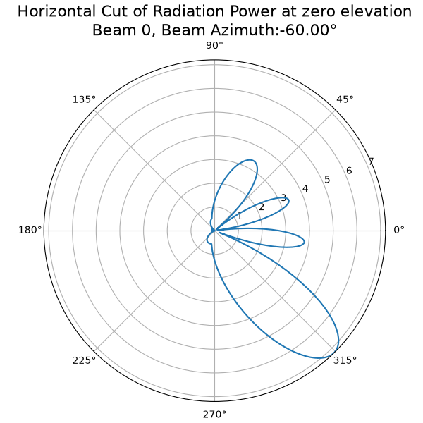
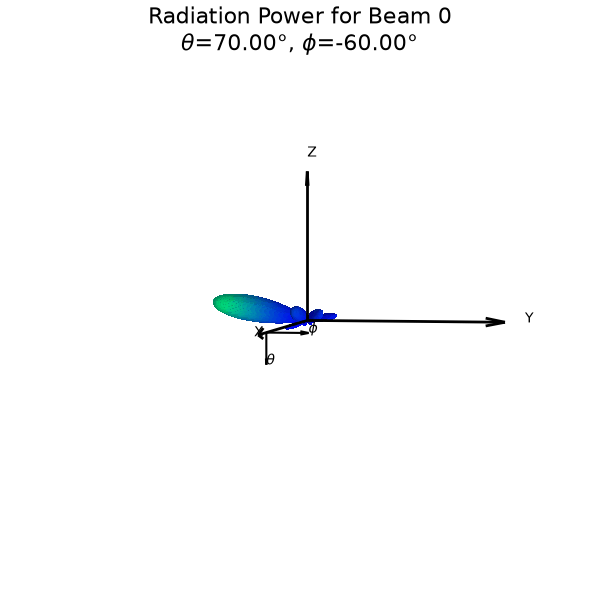
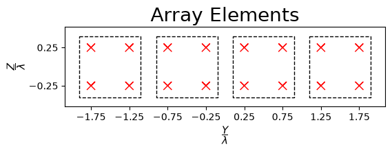
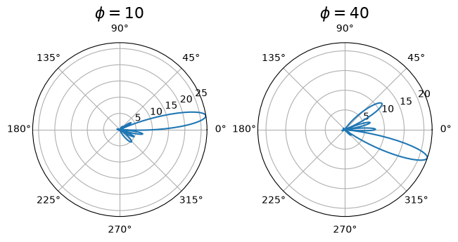
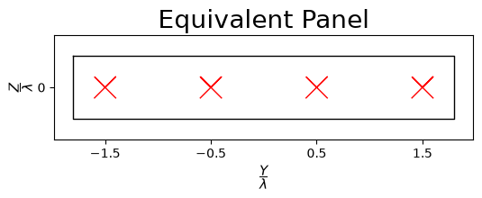
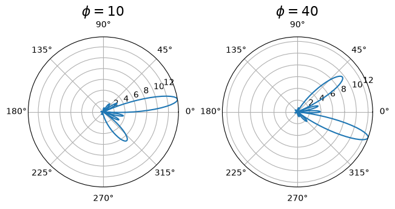
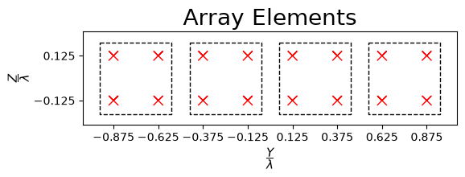
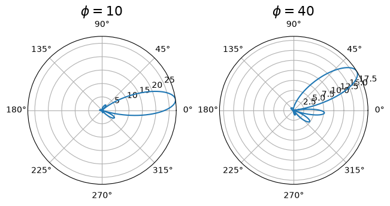
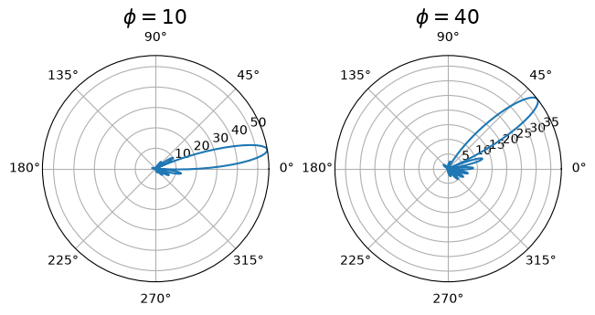

Beam Sweeping with Antenna Panels and Arrays
[1]:
import numpy as np
import matplotlib.pyplot as plt
import matplotlib.animation as animation
from IPython.display import HTML, Markdown, display
from neoradium import AntennaElement, AntennaPanel, AntennaArray
A Linear Antenna Panel with Dual Polarization
[2]:
# Create a linear antenna panel with 8 elements (4 antenna positions with dual polarization)
txAntenna=AntennaPanel([1,4], polarization='x')
# Get beam sweeping information:
precoders, beams = txAntenna.getSweepingBeams(numTheta=1, numPhi=8, polStrategy="equal")
# 'precoders' is a 'numPorts × numBeams' complex matrix.
numPorts, numBeams = precoders.shape
print(f"Number of ports: {numPorts}")
print(f"{len(beams[0])} Beams:")
print(" Beam Theta Phi Pol")
print(" ---- ----- ----- ---")
for i in range(numBeams):
print(f" {i} {np.round(beams[0][i],1):5.1f} {np.round(beams[1][i],1):5.1f} {beams[2][i]}")
Number of ports: 8
8 Beams:
Beam Theta Phi Pol
---- ----- ----- ---
0 90.0 -60.0 x
1 90.0 -38.2 x
2 90.0 -21.8 x
3 90.0 -7.1 x
4 90.0 7.1 x
5 90.0 21.8 x
6 90.0 38.2 x
7 90.0 60.0 x
[3]:
# Draw beams (animation):
# Note: The ±60° beams are attenuated due to the element pattern (based on 38.901).
# To verify, try larger beamwidths or use an omnidirectional element.
# Also observe the power of different beams: they become weaker toward the extreme angles (-60° and +60°).
#
# A panel for a sector works best between -45° and +45°. UEs at the sector edges experience
# attenuated beams, which is consistent with practical deployments.
#
# Options to better cover the full 360°:
# - Use multiple panels per sector
# - Use 4 panels with 90° offsets (common in small cells, dense urban deployments, and FR2)
title = "Horizontal Cut of Radiation Power at zero elevation\nBeam %d, Beam Azimuth:%.2f°"
# Initial call to get a figure and axis for the animation:
ax = txAntenna.drawRadiation(theta=90, radiationType="Field", normalize=False, weights=precoders[:,0],
title = title%(0,beams[1][0]))
# Callback function to update the radiation pattern:
def updateCb(frame):
ax.clear()
i = frame % numBeams
txAntenna.drawRadiation(theta=90, radiationType="Field", normalize=False, weights=precoders[:,i],
title = title%(i,beams[1][i]), ax=ax)
return ()
# Create animation of beams:
fig = ax.get_figure()
anim = animation.FuncAnimation(fig, updateCb, frames = numBeams, interval=1000, blit=False, repeat=False)
plt.close(fig) # Prevent duplicate static plot
# Save the animation to a GIF file and show it below
anim.save("BeamSweep.gif", writer=animation.PillowWriter(fps=1))
display(Markdown(""))
# Another option is to use the following command, which gives you more control over
# running and pausing the animation.
# HTML(anim.to_jshtml())

A 4×4 Antenna Panel with Dual Polarization
[4]:
# Create an antenna panel with 32 elements (16 antenna positions with dual polarization)
txAntenna=AntennaPanel([4,4], polarization='x')
# Get beam sweeping information:
precoders, beams = txAntenna.getSweepingBeams(numTheta=4, numPhi=4, thetaSpan=40, polStrategy="equal")
# 'precoders' is a 'numPorts × numBeams' complex matrix.
numPorts, numBeams = precoders.shape
print(f"Number of ports: {numPorts}")
print(f"{len(beams[0])} Beams:")
print(" Beam Theta Phi Pol")
print(" ---- ----- ----- ---")
for i in range(numBeams):
print(f" {i:2d} {np.round(beams[0][i],1):5.1f} {np.round(beams[1][i],1):5.1f} {beams[2][i]}")
Number of ports: 32
16 Beams:
Beam Theta Phi Pol
---- ----- ----- ---
0 70.0 -60.0 x
1 70.0 -16.8 x
2 70.0 16.8 x
3 70.0 60.0 x
4 83.5 -60.0 x
5 83.5 -16.8 x
6 83.5 16.8 x
7 83.5 60.0 x
8 96.5 -60.0 x
9 96.5 -16.8 x
10 96.5 16.8 x
11 96.5 60.0 x
12 110.0 -60.0 x
13 110.0 -16.8 x
14 110.0 16.8 x
15 110.0 60.0 x
[5]:
# Initial call to obtain the figure and axis for the animation:
title = "Radiation Power for Beam %d\n$\\theta$=%.2f°, $\\phi$=%.2f°"
ax = txAntenna.drawRadiation(radiationType="Field", normalize=True, viewAngles=(10,3),
weights=precoders[:,0],
title = title%(0,beams[0][0],beams[1][0]))
# Callback function to update the radiation pattern:
def updateCb(frame):
ax.clear()
i = frame % numBeams
print(f"\r Now drawing beam {i} ...", end="")
txAntenna.drawRadiation(radiationType="Field", normalize=True, viewAngles=(10,3),
weights=precoders[:,i],
title = title%(i,beams[0][i],beams[1][i]), ax=ax)
ax.set_xlim(-1.5,1.5)
ax.set_ylim(-1.5,1.5)
ax.set_zlim(-1.5,1.5)
if i==numBeams-1: print("\r Done." + 50*" ")
return ()
# Create animation of beams:
print("Preparing the animation:")
fig = ax.get_figure()
anim = animation.FuncAnimation(fig, updateCb, frames = numBeams, interval=1000, blit=False, repeat=True)
plt.close(fig) # Prevent duplicate static plot
# Save the animation to a GIF file and show it below
anim.save("BeamSweep3D.gif", writer=animation.PillowWriter(fps=1))
display(Markdown(""))
# Another option is to use the following command, which gives you more control over
# running and pausing the animation.
# HTML(anim.to_jshtml())
Preparing the animation:
Done.

A Linear Antenna Array
[6]:
# Now we create a 1×4 antenna array with four 2×2 panels. In this case, we have 8 antenna ports,
# and each port corresponds to one panel/polarization (e.g., 4 panels, 2 polarizations).
panelTemplate = AntennaPanel([2,2], polarization="x")
txArray = AntennaArray([1,4], panels=panelTemplate)
# Creating beam sweeping precoders for this array:
precoders, beams = txArray.getSweepingBeams(numTheta=1, numPhi=8, polStrategy="equal")
# 'precoders' is a 'numPorts × numBeams' complex matrix.
numPorts, numBeams = precoders.shape
print(f"Number of ports: {numPorts}")
print(f"precoders shape: {precoders.shape}")
print(f"{len(beams[0])} Beams:")
print(" Beam Theta Phi Pol")
print(" ---- ----- ----- ---")
for i in range(numBeams):
print(f" {i} {np.round(beams[0][i],1):5.1f} {np.round(beams[1][i],1):5.1f} {beams[2][i]}")
Number of ports: 8
precoders shape: (8, 8)
8 Beams:
Beam Theta Phi Pol
---- ----- ----- ---
0 90.0 -60.0 x
1 90.0 -38.2 x
2 90.0 -21.8 x
3 90.0 -7.1 x
4 90.0 7.1 x
5 90.0 21.8 x
6 90.0 38.2 x
7 90.0 60.0 x
[7]:
# Important note:
# This antenna array, with default internal precoders (B), behaves like a panel of 4 elements
# with 1λ spacing instead of 0.5λ. Since the spacing is larger than 0.5λ, grating lobes appear
# for some steering angles. This means we cannot reliably create beams at angles greater than 30°.
# Draw the antenna array:
txArray.showElements()
# Here is how two different beams look when using port-based precoding:
fig, ax = plt.subplots(1,2, layout='constrained', subplot_kw={'projection': 'polar'})
txArray.drawRadiation(theta=90, radiationType="Field", normalize=False, title = "$\\phi=10$",
weights=txArray.b @ txArray.getPortSteeringVector(90,10).flatten(), ax=ax[0])
txArray.drawRadiation(theta=90, radiationType="Field", normalize=False, title = "$\\phi=40$",
weights=txArray.b @ txArray.getPortSteeringVector(90,40).flatten(), ax=ax[1])
[7]:
<PolarAxes: title={'center': '$\\phi=40$'}>


[8]:
# To verify this, we can create a panel with 1λ spacing:
txPanel=AntennaPanel([1,4], polarization='x', spacing=(1,1))
txPanel.showElements(title="Equivalent Panel")
# Show the same two beams with this panel. As you can see the beams look very similar.
fig, ax = plt.subplots(1,2, layout='constrained', subplot_kw={'projection': 'polar'})
txPanel.drawRadiation(theta=90, radiationType="Field", normalize=False, title = "$\\phi=10$",
weights=txPanel.getPortSteeringVector(90,10).flatten(), ax=ax[0])
txPanel.drawRadiation(theta=90, radiationType="Field", normalize=False, title = "$\\phi=40$",
weights=txPanel.getPortSteeringVector(90,40).flatten(), ax=ax[1])
[8]:
<PolarAxes: title={'center': '$\\phi=40$'}>


[9]:
# One way to address this problem is to reduce the antenna spacing within each panel.
# For example, we use antenna panels with an internal spacing of 0.25λ. In this
# configuration, the panel centers are separated by 0.5λ, enabling the array to
# perform beamforming over larger angles.
panelTemplate = AntennaPanel([2,2], spacing=[0.25,0.25], polarization="x")
txArray = AntennaArray([1,4], panels=panelTemplate)
# Draw the antenna array:
txArray.showElements()
# Here is how two different beams look when using port-based precoding:
fig, ax = plt.subplots(1,2, layout='constrained', subplot_kw={'projection': 'polar'})
txArray.drawRadiation(theta=90, radiationType="Field", normalize=False, title = "$\\phi=10$",
weights=txArray.b @ txArray.getPortSteeringVector(90,10).flatten(), ax=ax[0])
txArray.drawRadiation(theta=90, radiationType="Field", normalize=False, title = "$\\phi=40$",
weights=txArray.b @ txArray.getPortSteeringVector(90,40).flatten(), ax=ax[1])
[9]:
<PolarAxes: title={'center': '$\\phi=40$'}>


[10]:
# Another option is to use element-based precoding, which enables beam steering over larger
# angles with narrower beams. This is because the element spacing remains 0.5λ, while the
# weights of individual elements can be controlled independently.
panelTemplate = AntennaPanel([2,2], polarization="x")
txArray = AntennaArray([1,4], panels=panelTemplate)
# Here is how the same beams look:
fig, ax = plt.subplots(1,2, layout='constrained', subplot_kw={'projection': 'polar'})
txArray.drawRadiation(theta=90, radiationType="Field", normalize=False, title = "$\\phi=10$",
weights=txArray.getSteeringVector(90,10).conj().flatten(), ax=ax[0])
txArray.drawRadiation(theta=90, radiationType="Field", normalize=False, title = "$\\phi=40$",
weights=txArray.getSteeringVector(90,40).conj().flatten(), ax=ax[1])
[10]:
<PolarAxes: title={'center': '$\\phi=40$'}>

[ ]: